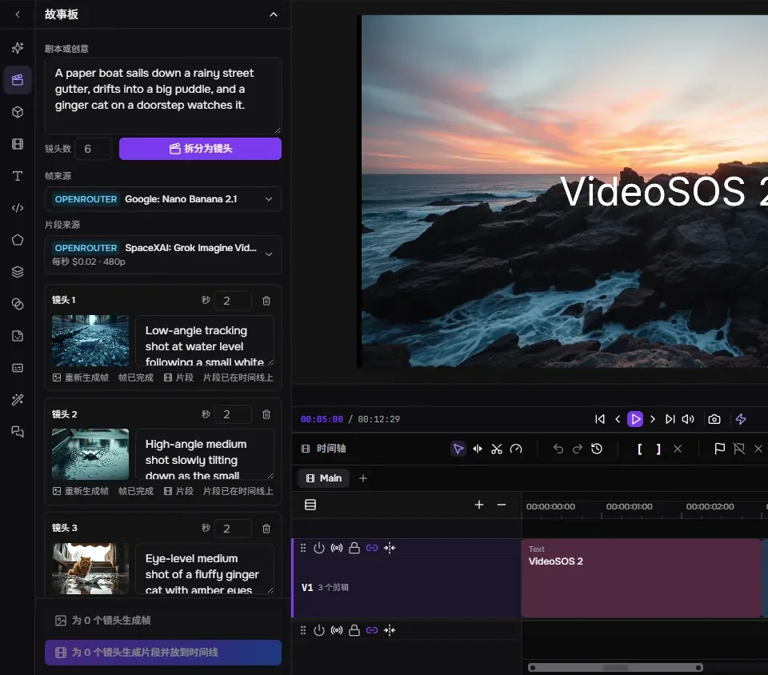
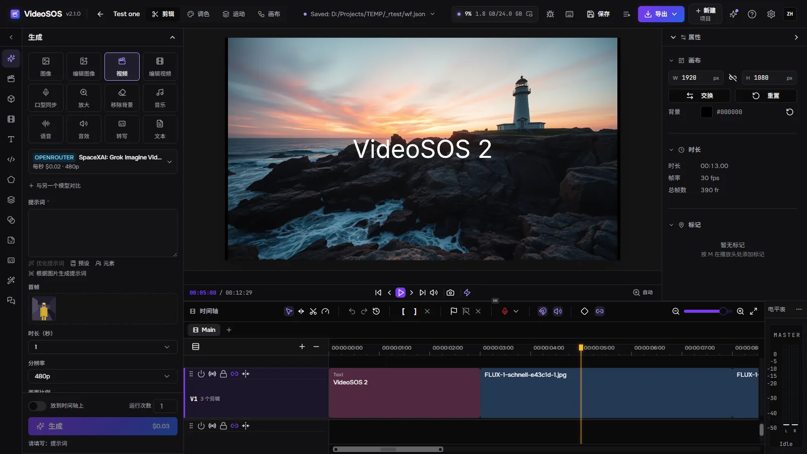
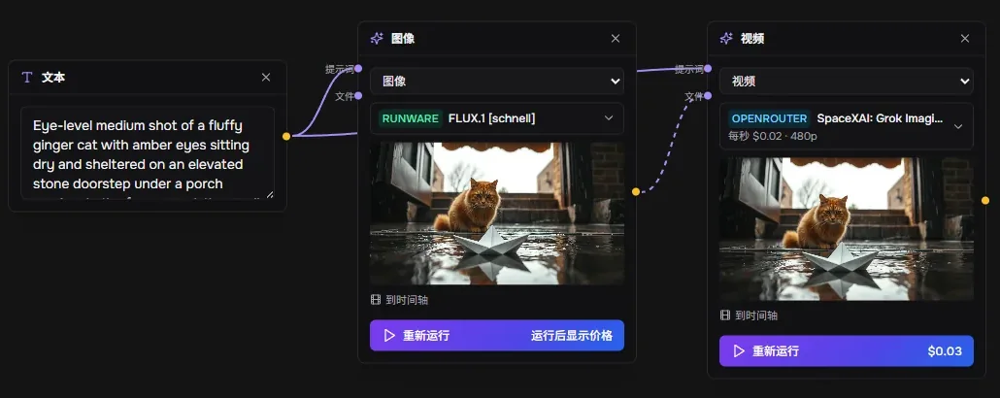
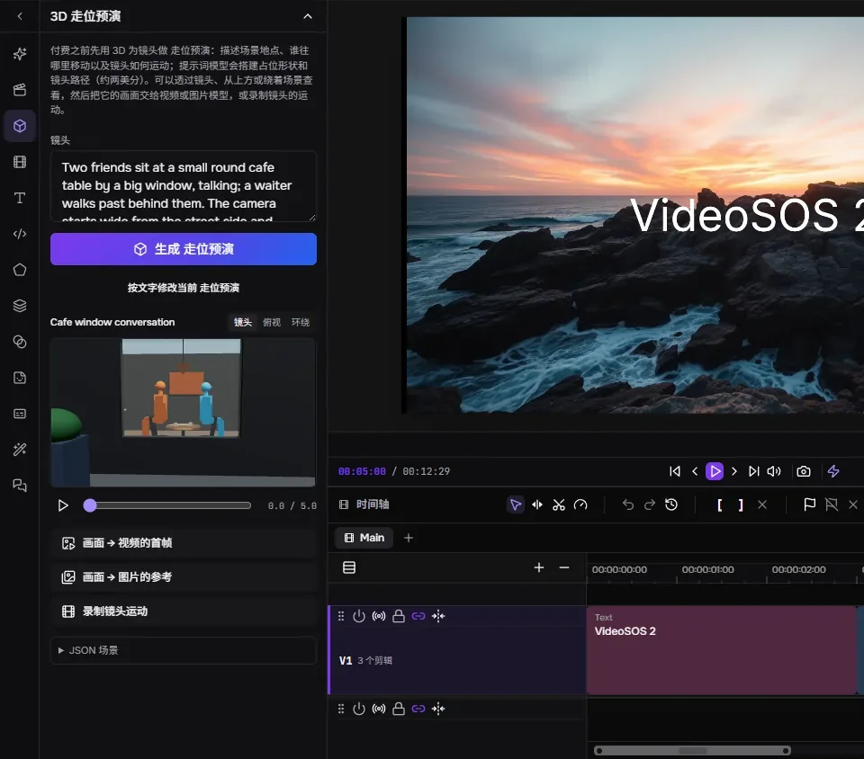
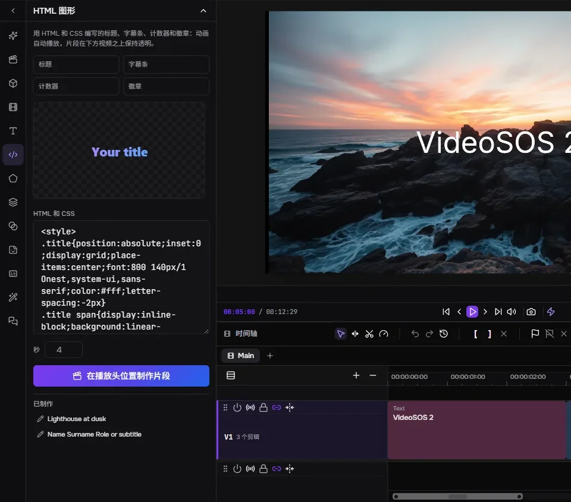
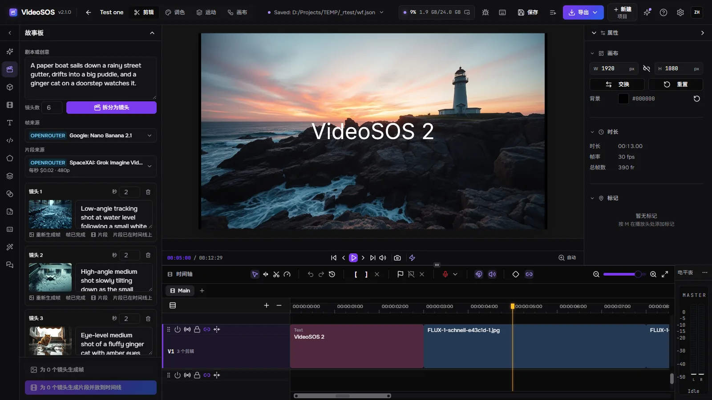
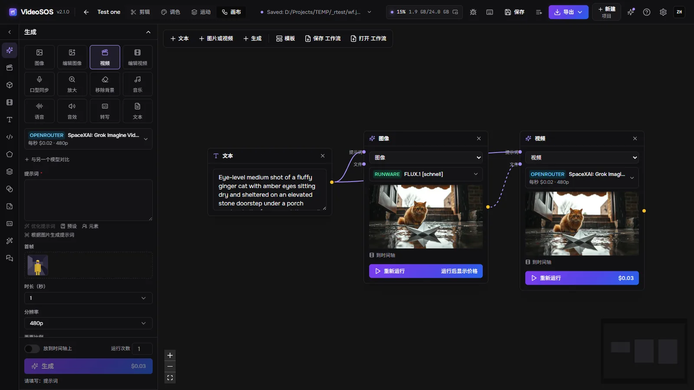
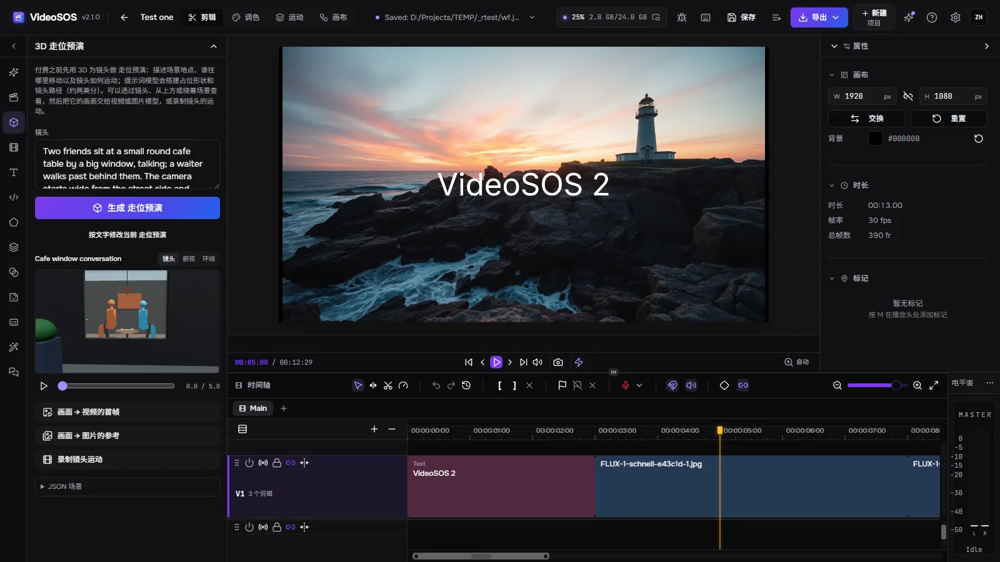
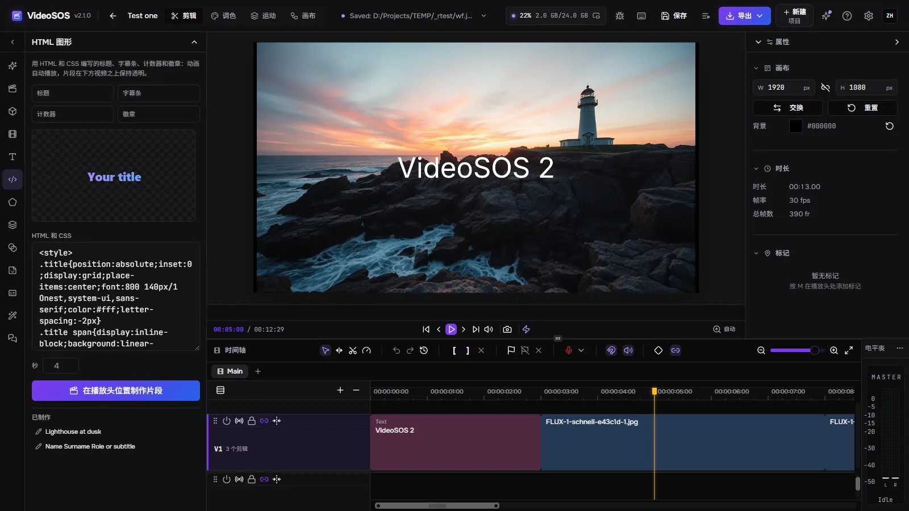

故事板

语言模型把剧本拆分成镜头；每个镜头由图像模型生成一帧，再由视频模型从这一帧开始生成片段，片段依次排到时间线上。
VideoSOS 把 OpenRouter、fal 和 Runware 上最好的图像、视频、音乐和语音模型，与真正的多轨编辑器放在一起。在故事板、节点画布和 3D 走位预演中规划影片，用你自己的密钥生成每个镜头（价格在运行前就会显示），再剪辑成完整的视频——也可以让 AI 智能体与你一起完成。
支持 Windows 10/11、Linux（实验性）以及搭载 Apple Silicon 的 macOS（实验性）。预览和导出需要支持 WebGPU 的显卡。生成需要 OpenRouter、fal 或 Runware 的密钥——费用直接付给它们。

生成、规划和剪辑集于一个程序，文件保存在你自己的磁盘上。

语言模型把剧本拆分成镜头；每个镜头由图像模型生成一帧，再由视频模型从这一帧开始生成片段，片段依次排到时间线上。

文本、图片、视频和生成任务都是节点，由它们传递的内容相连。

描述镜头，语言模型就会用替身形体、站立和坐着的人物、他们的动作以及摄影机路径来搭建它。

用 HTML 和 CSS 制作标题、字幕条、计数器和徽章，实时预览，并生成带透明通道的片段，叠放在播放头处的视频之上。
十二类任务：图像、编辑、由文本或某一帧生成视频、视频编辑、口型同步、放大、去除背景、音乐、人声、音效、转写和文本——来自 OpenRouter、fal 和 Runware 的一千多个模型，实时读取自各提供商。
表单根据模型自身的描述生成，价格在你点击“生成”之前就已算出；运行结束后会记录提供商的实际账单。每日限额可约束智能体。
同一个提示词最多可再发给另外两个模型，结果与各自的价格并排显示。
把角色、物体或场景连同其图片以名称保存：在提示词中写 @名称，就会把它们发送给模型，同一张脸便能在镜头之间一再出现。
运行时，任务会画在时间线上它将落下的位置；任何片段的一部分都可以原地重新生成；下一个片段从上一个片段的最后一帧接着生成。
多条视频和音频轨道，波纹、滚动、内滑和外滑修剪，转场，带贝塞尔曲线图的关键帧，蒙版，混合模式，带示波器的调色，文本、形状和字幕。在显卡上快速导出为 MP4、WebM、MOV 或 MKV，或导出 FCPXML 供 Final Cut、DaVinci Resolve 和 Premiere 使用。
连接 Claude Code、Claude Desktop、Cursor 或 Codex，智能体就能做窗口里能做的一切：选择模型、估算价格、生成、逐步编辑时间线、在 3D 中安排镜头、制作图形并导出。每次智能体编辑之前都会保留时间线，编辑可以先预演，也可以要求每一次都由你亲自确认。
你选择的 OpenRouter 模型用同样的工具操作程序，一步一步进行，并显示每一步的费用和“停止”按钮。
YouTube 链接、yt-dlp 支持的任意网站或直接的文件链接都会进入素材库，带有进度显示，可取消和续传。
没有我们的账号：你直接向提供商付费。项目和生成结果都是你磁盘上的普通文件；任务在发送前先保存，绝不会重复付费，结果会在提供商的链接过期前下载。
英语、俄语、德语、西班牙语、法语、日语、韩语、巴西葡萄牙语、土耳其语和中文，包括特效及其参数。
为提供商和下载设置代理，并支持网络访问：另一台电脑或手机上的浏览器凭访问密钥即可打开同一个界面，而一切仍在这里运行。
程序本身，使用你的语言。




是的。VideoSOS 免费且开源（MIT）。生成费用用你自己的密钥付给提供商；剪辑和导出不收费。
我们这边不需要。你需要至少一个提供商——OpenRouter、fal 或 Runware——的密钥，并直接向其付费；VideoSOS 看不到你的钱，也绝不会把你的密钥展示给智能体。
取决于模型：生成表单在每次运行前都会显示价格，从快速出图的不到一美分到长视频的几美元不等，历史记录会保存每次运行的花费。故事板会先审批便宜的画面，再生成收费的片段。
只有生成所需的内容会发送给你选择的提供商。项目、媒体和结果都留在你的磁盘上；匿名统计默认关闭，除非你自己开启，并且永远不包含提示词、文件或密钥。
Windows 10 和 11 x64；Linux x86-64 和搭载 Apple Silicon 的 macOS 为实验性构建。支持 WebGPU 的显卡用于运行预览和导出。
连接 Claude Code、Claude Desktop、Cursor 或 Codex，智能体就能做窗口里能做的一切：选择模型、估算价格、生成、逐步编辑时间线、在 3D 中安排镜头、制作图形并导出。每次智能体编辑之前都会保留时间线，编辑可以先预演，也可以要求每一次都由你亲自确认。
claude mcp add --transport http videosos http://127.0.0.1:8796/mcp
Tauri 外壳在同一进程中运行 Rust 服务器；窗口是 FreeCut 编辑器的分支，加入了生成面板、故事板、画布、3D 走位预演和智能体桥接。任务保存在 SQLite 中，文件保存在你的磁盘上。
React window (FreeCut fork) ─┐
├─ VideoSOS.exe (Tauri shell + Rust/axum server inside)
Rust axum server ────────────┘ │
├─ OpenRouter · fal · Runware (your keys)
└─ MCP http://127.0.0.1:8796/mcp